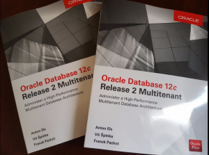

Here it is. The multitenant book is out for sale…  One year ago, at DOAG2015, Vit Spinka came to me with this idea: with Anton Els they planned to write a book on multitenant and proposed me to be a co-author. I was already quite busy at that time and my short-term plan was to prepare and pass the OCM 12c exam. But this book idea was something great and that had to be started quickly. At that time, we expected the 12cR2 to be out on June 2016 and then the book should be at for Oracle Open World. So no time to waste: propose the idea to Oracle Press, find a reviewer and start as soon as possible.
For reviewers, I was very happy that Deiby Gomez accepted to do the technical review. And Mike Donovan was volunteer to do the English review. I think he didn’t imagine how hard it can be to take non-native English speakers writing, with very limited vocabulary, and put that to something that makes sense to read. It’s an amazing chance to have the language review done by someone with deep technical knowledge. This ensures that the improved style do not change the meaning. Having that language review is also a good way to uniformise the style for what is written by three different authors. I bet you cannot guess who has written what. In addition to that, Oracle Press asked to Arup Nanda to do an additional review which was great because Arup has experience about book writing.
So we worked on the 12.2 beta, tested everything (there are lot of code listings in the book), filled bugs, clarified everything. We had good interaction with support engineers and product managers. The result is a book on multitenant which covers all administration tasks you can do on a 12c database.
It was an amazing adventure from the get-go. You know people for their skills, blogs, presentations and discussions at events. And then you start to work with them on a common thing – the book – and remotely – we’re all on different timezones. How to be sure that you can work together? Actually, it was easy and went smooth. We listed the chapters and each of us has marked which chapter he prefers. And that was done: in one or two e-mail exchange the distribution of tasks was done with everybody happy. We had very short schedule: need to deliver one chapter every 2 or 3 weeks. I was happy with what I wrote and was equally happy with what I’ve read from Vit and Anton. Reviews from Deiby, Mike, Arup were all adding higher precision and clarity. Incredible team work without the need for long discussions. Besides the hard work and the delightful result, working with this team was an amazing human adventure.
Oracle Database 12c Release 2 Multitenant (Oracle Press)
Master the Powerful Multitenant Features of Oracle Database 12c
• Build high-performance multitenant Oracle databases
• Create single-tenant, multitenant, and application containers
• Establish network connections and manage services
• Handle security using authentication, authorization, and encryption
• Back up and restore your mission-critical data
• Work with point-in-time recovery and Oracle Flashback
• Move data and replicate and clone databases
• Work with Oracle’s Resource Manager and Data Guard